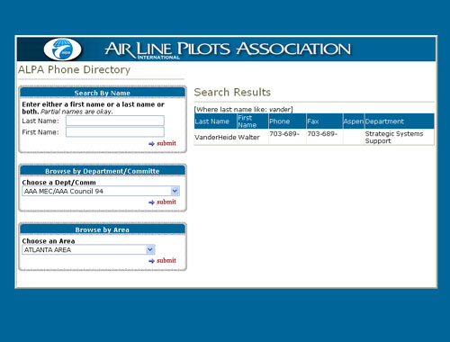

|  |
What I did...
In 2004 I developed two versions of this Phone Book for ALPA. The HTML & clint-side VBScript version you see here is a stand alone
desktop application that opens in an IE browser and runs against a Microsoft Access Database, but is not connected to the Internet.
This stand alone version is complete with an installation program that runs from a self-extracting zip file.
|